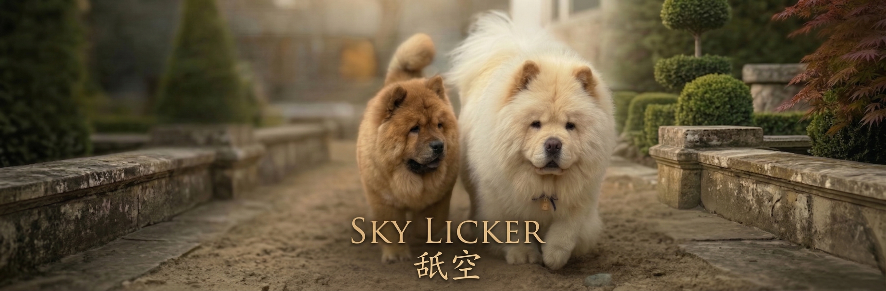

История Питомника
За именем Sky Licker стоит более чем 10-летний опыт. Мы растим собак, которые сочетают в себе безупречный экстерьер и стабильную психику.
ЗДОРОВЬЕ
Все собаки проходят генетические тесты и снимки на отсутствие дисплазии.
СЕМЬЯ
Наши Чау-Чау живут в загородном доме как полноправные члены семьи.

Наши Собаки

Марго
Кремовая длинница
Воплощение нежности, грации и истинного достоинства классической Чау-Чау.

Юстин
Рыжий смуф
Мощный костяк, безупречная анатомия и яркий темперамент.

Варя
Черная длинница
Роскошная черная звезда. Глубокий окрас и взгляд, покоряющий с первой секунды.